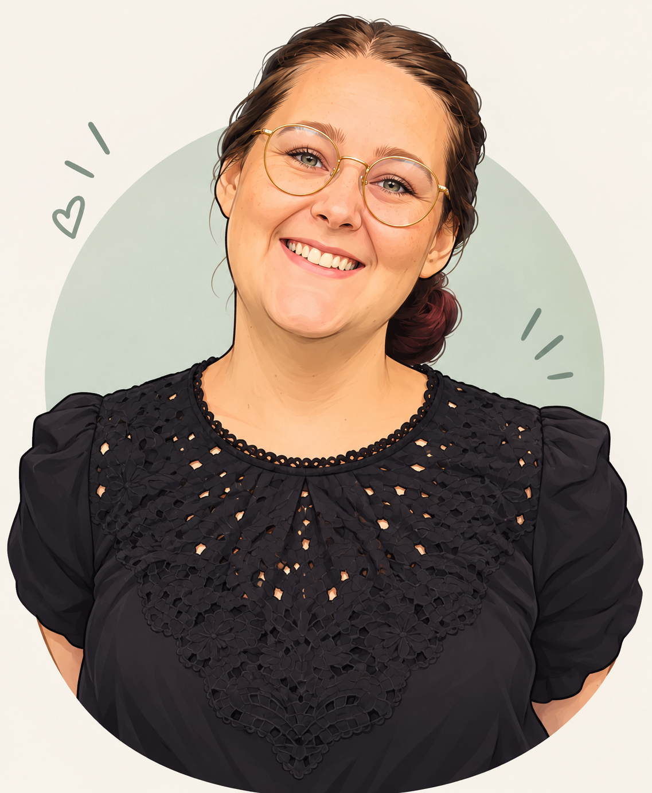

Kreativ, nysgerrig og glad for at nørde detaljerne
"I'm curious about everything - and that's where the ideas begin."

Sophia Holmberg Hesteng
Dansk - Modersmål
Engelsk - Flydende
Uddannelse Multimediedesign 2025 -
Baggrund HF (2014 - 2017) Folkeskole (afsluttet 2010)
Esbjerg
Jeg er en kreativ og nysgerrig multimediedesigner, der brænder for at kombinere design, teknologi og brugeroplevelser. Jeg interesserer mig særligt for UX/UI, webdesign og visuel kommunikation og kan godt lide at arbejde hele vejen fra den første idé til den færdige løsning.
Jeg trives med at eksperimentere, lære nyt og nørde detaljerne — både når det handler om det visuelle udtryk og den tekniske funktionalitet. For mig handler godt design om at skabe løsninger, der både fungerer, føles intuitive og ser godt ud.